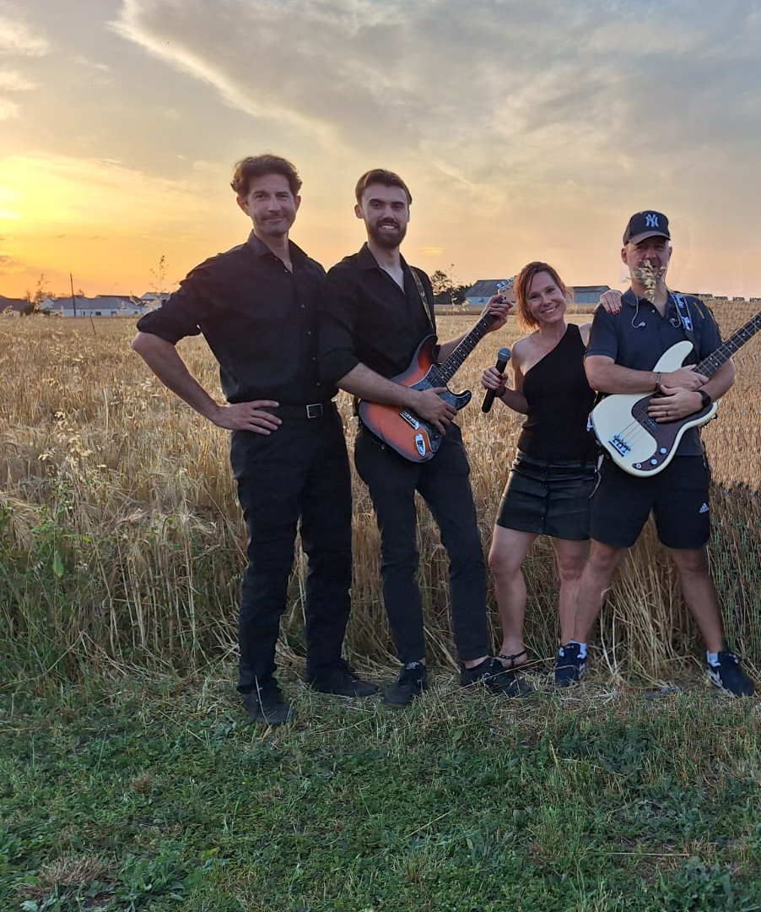
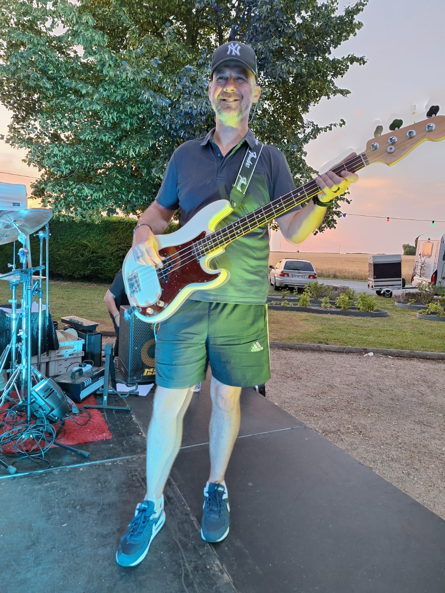
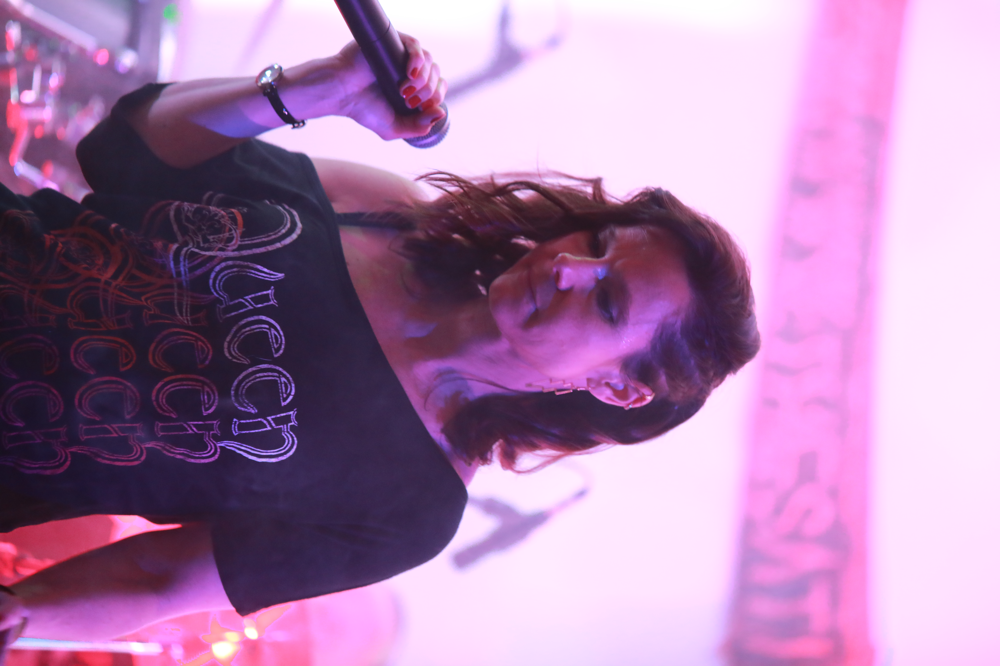

03
GUITARE
Tom
Compositeur, ses riffs endiablés apportent de l'énergie aux Dissidents.

The Dissidents proposent un rock puissant, sincère et profondément humain. Entre compositions originales et reprises revisitées, le groupe construit un univers où les guitares répondent à des textes engagés et mélodiques.
Sur scène, chaque concert est pensé comme une rencontre avec le public : de l'énergie, de l'émotion et une véritable proximité qui fait de chaque prestation un moment unique.
Découvrir les membres
Compositeur, ses riffs endiablés apportent de l'énergie aux Dissidents.

La basse donne au groupe son assise et son groove sur scène.

Autrice et interprète, elle porte la voix des Dissidents et participe à la construction de leur univers musical. Sa sensibilité, ses harmonies et sa présence musicale apportent une couleur particulière à l'identité du groupe.

La puissance de sa voix réveille les endormis du bar, même s'il pourrait moins crier parfois...